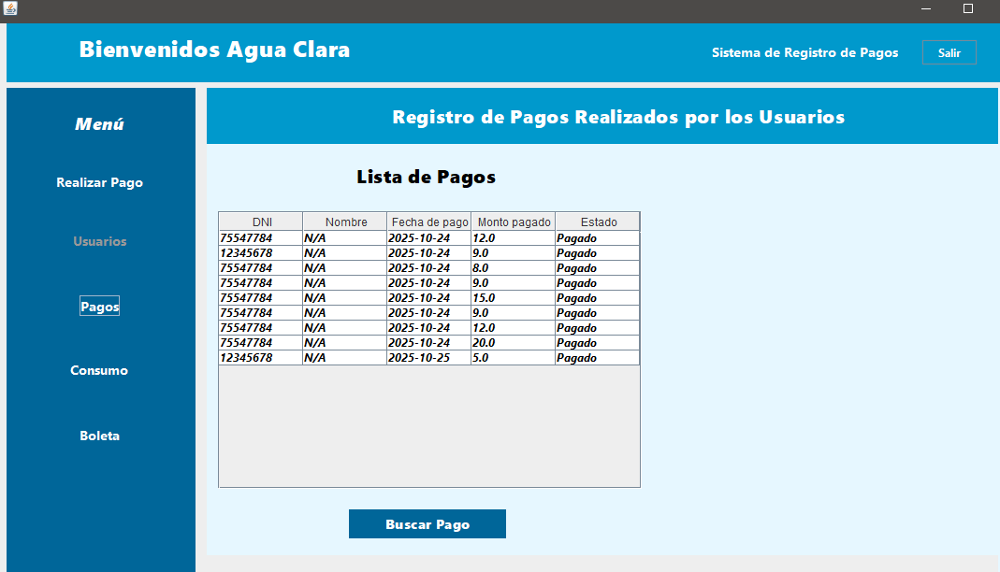
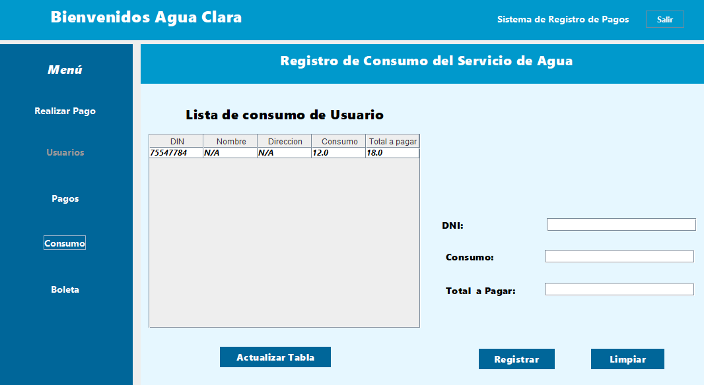
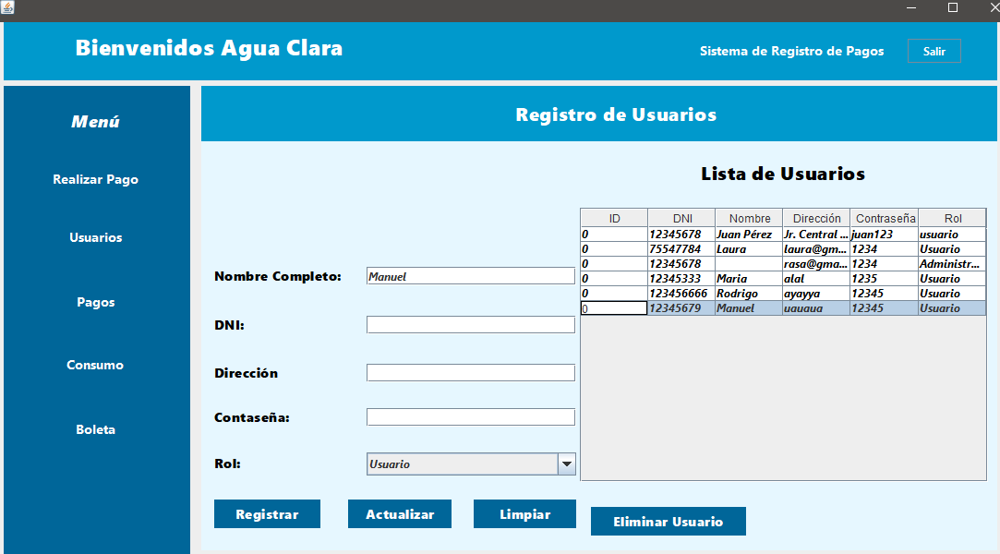
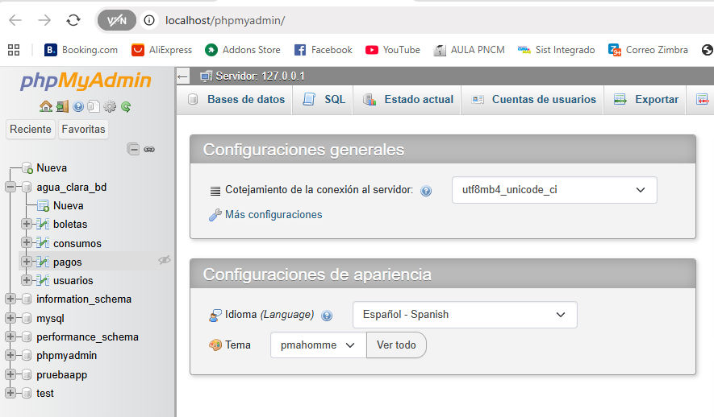
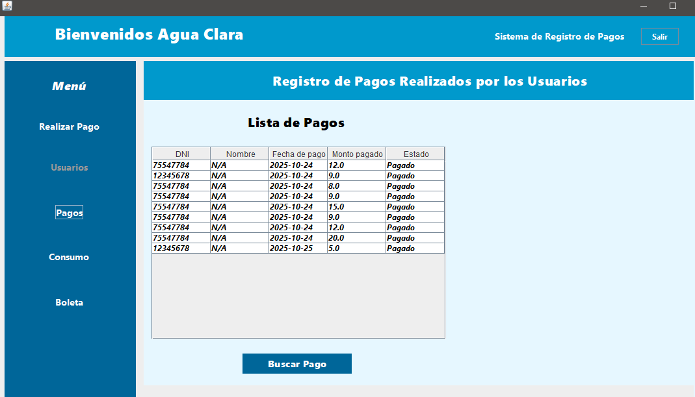
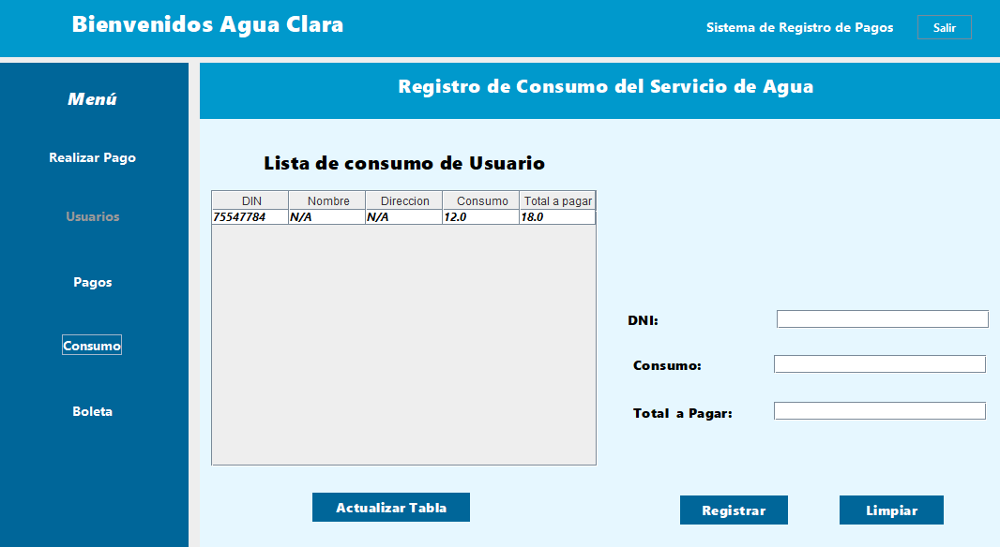
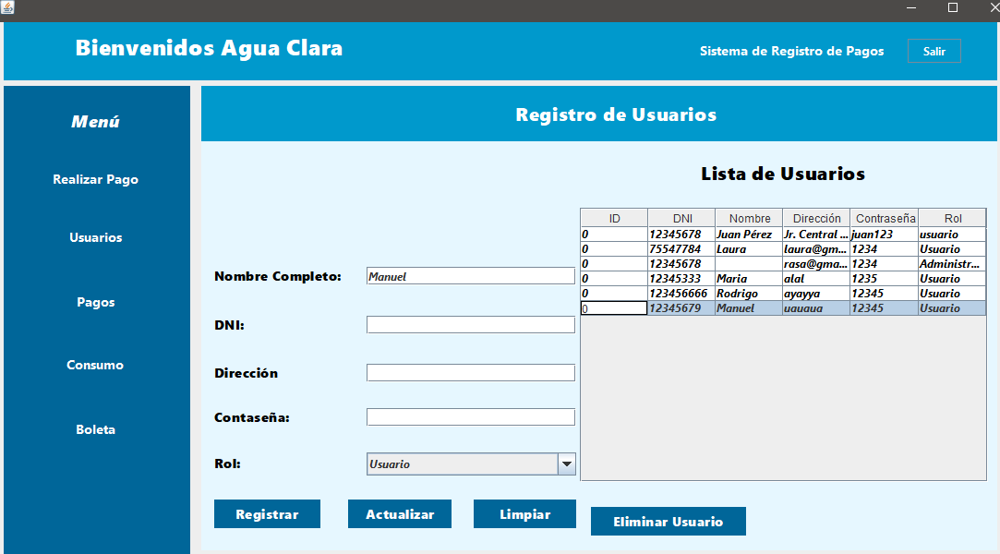
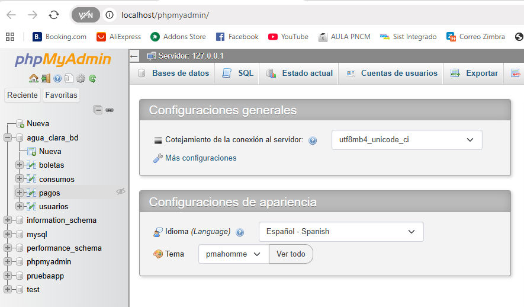

Presentación del Proyecto Final “Agua Clara”
En la semana 8 culminamos con la presentación del proyecto final titulado “Agua Clara”, una aplicación de escritorio desarrollada en Java con Apache NetBeans y conectada a una base de datos MySQL. Este sistema permite gestionar los pagos de servicios de agua potable, las boletas generadas, los usuarios registrados y los consumos asociados.
El desarrollo de este proyecto consolidó los conocimientos aprendidos en todo el ciclo, aplicando la programación orientada a objetos, la conexión con bases de datos y la creación de interfaces gráficas funcionales.
Principales Funcionalidades
- Login seguro con roles de Administrador y Usuario.
- Registro, edición y eliminación de usuarios.
- Visualización de consumos y reportes mensuales.
- Interfaz gráfica moderna con panel lateral y botones funcionales.
Capturas del Proyecto

 







Reflexión Final
El desarrollo del sistema “Agua Clara” fue una experiencia valiosa que permitió aplicar conceptos de programación orientada a objetos, diseño de interfaces gráficas y manejo de bases de datos relacionales. Este proyecto demuestra cómo la tecnología puede optimizar procesos reales de una institución o empresa.
Con esto se concluye satisfactoriamente el proceso de aprendizaje, integrando conocimientos técnicos y prácticos, esenciales para el perfil de un ingeniero de sistemas y computación.